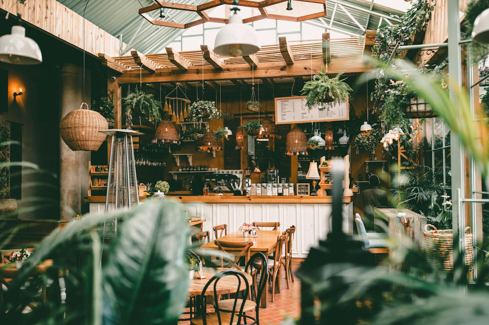
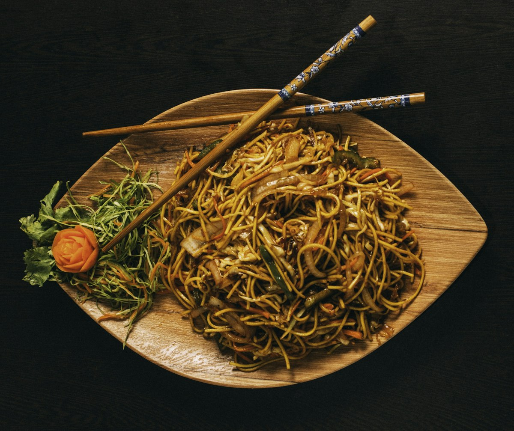
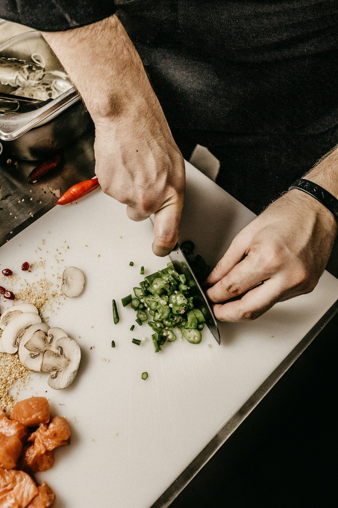

10.7769° B · 106.7009° Đ
Sổ tay ăn uống — TP.HCM
Bây giờ ở Sài Gòn --:-- Hợp để: đi ăn
Sài Gòn, nếm từng quận.
măm đi ăn thử từng quán, tự trả tiền, rồi viết lại thật lòng — để bữa tiếp theo của bạn không phải là một canh bạc.
Món nướcCơmCà phêĂn khuyaDimsumHải sảnĐồ nướngBrunchBánh ngọtHealthyNhà hàng
Không quảng cáo. Không mời ăn. Chỉ có bữa ăn thật.
Mỗi bài review đều bắt đầu bằng một hóa đơn măm tự thanh toán. Ba con số dưới đây là lời hứa của chúng mình.
-
Ăn thử thật
89
quán đã ngồi ăn tận nơi
Không review qua ảnh, không tổng hợp từ mạng. Quán nào lên măm là quán măm đã ngồi ăn ít nhất một bữa.
-
Tự trả tiền
100%
hóa đơn do măm thanh toán
Không nhận tài trợ, không ăn mời. Vì vậy chê được, khen cũng thật.
-
Viết thật lòng
0
bài viết có trả phí
Điểm số chỉ phản ánh trải nghiệm hôm đó: món, giá, không gian và cách phục vụ.
Một bài review được làm thế nào
- 01Đi ăn ẩn danhGọi món như khách bình thường, không báo trước.
- 02Tự thanh toánGiữ hóa đơn để ghi giá thật, ví dụ 65.000đ một tô.
- 03Quay lại lần haiMột bữa ngon có thể là may mắn, hai bữa thì không.
- 04Chấm 4 tiêu chíMón · Giá · Không gian · Phục vụ, thang điểm 5.
Mỗi quận một vị. Chọn nơi bạn đang đứng.
17 quận đã phủ sóng. Đây là sáu nơi măm ghé nhiều nhất.
+ 11 quận khác đang được cập nhật
Xem tất cả quận
Hoặc theo cơn thèm. 11 loại món.

Tuần này măm ăn gì. Năm quán đáng để đi ngay.
Điểm trung bình theo 4 tiêu chí. Giá là giá trung bình cho một người.
 4.4/5
4.4/5
Bếp Tối Bistro
01“Bít tết chín vừa, sốt tiêu xanh cay nhẹ, ánh đèn đủ tối để nói chuyện nhỏ.”

4.6/5Vườn Lặng Cà Phê
02Phin Góc Phố
03
4.5/5Mì Xào Chú Tư
04
4.3/5
Nhà Kho 1975
05Cập nhật 15/10/2026 · 89 quán trong sổ
Xem tất cả quánChơi một ván, học một món.
Ba mini game nấu ăn ngắn gọn. Sai bước thì heo măm giải thích vì sao; thắng thì mở khóa công thức để nấu ở nhà.
- 01Nấu phở bòXếp đúng thứ tự các bước~3 phút
- 02Pha cà phê sữa đáGiữ để rót đúng vạch~1 phút
- 03Đi chợ nấu canh chuaChọn đúng nguyên liệu~2 phút

Đói rồi?
Bữa ngon kế tiếp bắt đầu từ đây.
Chọn quận, chọn món, hoặc để măm gợi ý. Mọi quán đều đã được ăn thử — bằng tiền thật.